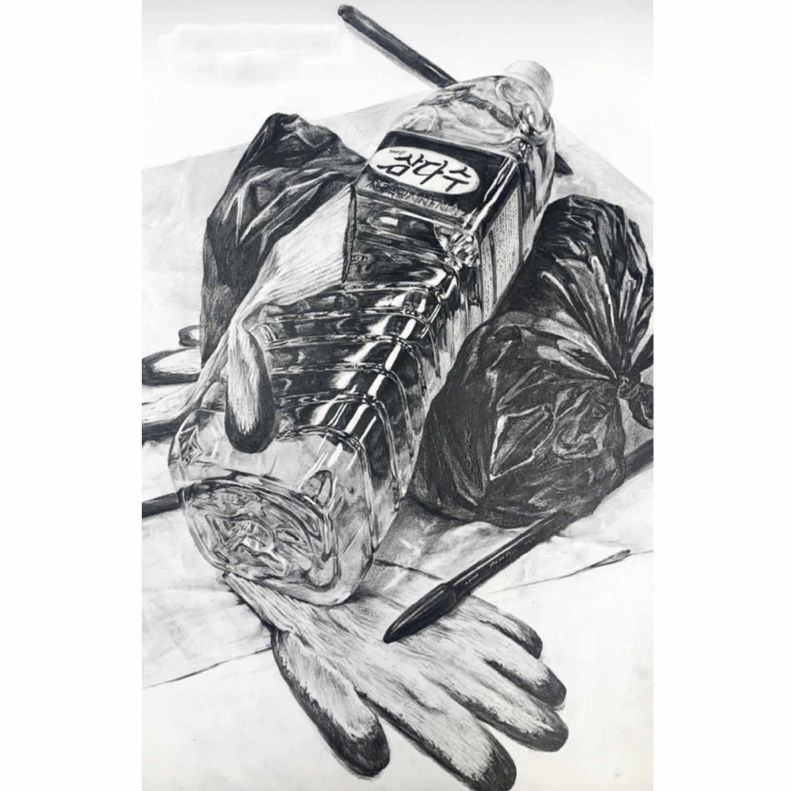

Duality
(Ink drawing and mixed media collage on sketchbook)
This piece juxtaposes two ways of seeing — the linear clarity of an ink drawing and the emotional complexity of color. The left eye, rendered in lines, reflects external observation, while the painted collage on the right represents the introspective, expressive gaze. Together, they explore the tension between how we are perceived and how we feel within, questioning the authenticity of self-image and artistic interpretation.
This piece juxtaposes two ways of seeing — the linear clarity of an ink drawing and the emotional complexity of color. The left eye, rendered in lines, reflects external observation, while the painted collage on the right represents the introspective, expressive gaze. Together, they explore the tension between how we are perceived and how we feel within, questioning the authenticity of self-image and artistic interpretation.

persona — (Mixed media on Kent paper, digital drawing)
The persona, a concept established by psychiatrist Carl Jung, is formed by accommodating the demands of those around us.
While it helps maintain harmony in social life, it can also lead to losing one's true self.
The irony of losing one's genuine identity due to the persona created to hide oneself is depicted in this work.
By attaching white gauze to the canvas, I sought to express how people in modern society are concealed by external forces, without regard to their own will.
드로잉
(Pencil on Kent paper)
I designed a play device inspired
by a retro phonograph,
where a bell rings as a marble is released.

정물화 연필소묘
(Pencil on Kent paper)
A scene featuring a Samdasoo water bottle,
a pair of work gloves, a black plastic bag,
and a plus pen was depicted in realistic detail.

gerbera — (Mixed media on Kent paper)
The gerbera, a perennial plant belonging to the daisy family and known for its resilience to cold, has the symbolic meaning of 'An Unsolvable Mystery.'
This flower was chosen as the title of the work because the piece was inspired by a period of self-reflection and introspection.
As I portrayed myself in this work, I found myself continuously contemplating my own identity.
After grappling with various uncertainties, I decided to conclude that, during this turbulent time, my sense of self was an unsolvable mystery — an open-ended conclusion that remains unresolved.

gerbera2 — (Mixed media on Kent paper, digital drawing)
This piece, created around the same time as the first one, also carries autobiographical significance.
When I paint portraits, I believe the eyes determine the mood and meaning of the work, so I approach them with the utmost care.
In this painting, I wanted to express feelings of confusion and being lost by depicting the gaze looking in different directions.